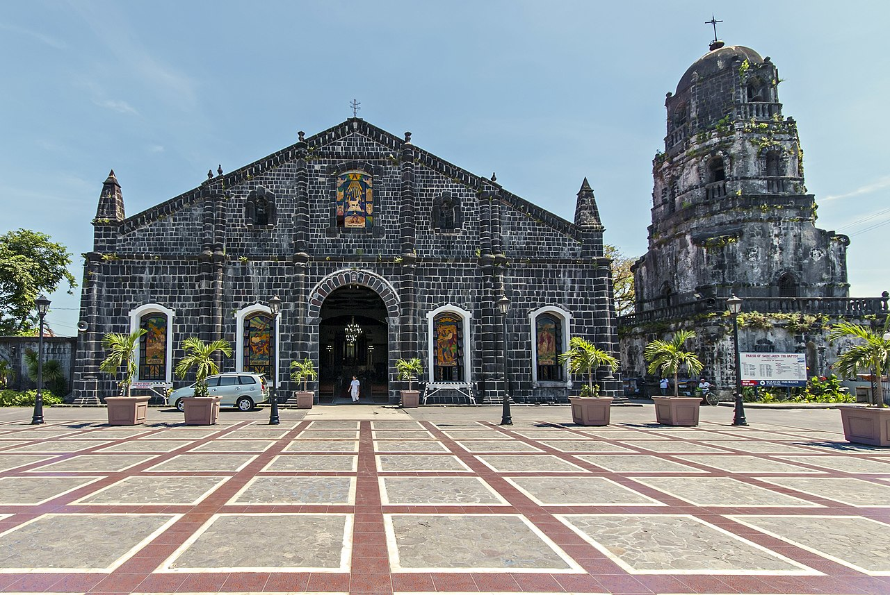

Mayon Volcano, active volcano,
southeastern Luzon, Philippines, dominating the city of Legaspi .
Called the world’s most perfect volcanic cone because of the symmetry of its shape,
it has a base 80 miles (130 km) in circumference and rises to 8,077 feet (2,462 metres) from the shores of Albay Gulf.
Tabaco Church

Tabaco is one of the seventeen municipalities in the province of Albay.
Classified as a third class municipality with a population of 85,697 and a land area of 12,210.4 hectares.
It is located on the eastern coast of Albay Province, which is in turn located at the center of Bicol Region.
Bicol Express
Bicol express is a spicy Filipino stew consisting of bite sized pieces of pork with chilies,
coconut milk, shrimp paste (bagoong), onions, tomato and garlic.
The dish is named after the train in the Bicol region of the Philippines, known for its spicy food